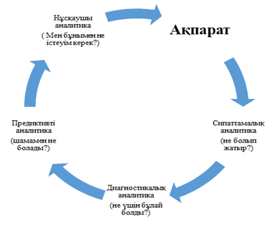

7. Big Data Analytics қызметі және қолданылатын
құралдары
1. Big Data Analytics.
2. Аналитика түрлері.
3. Үлкен деректерді талдау құралдары жинағы.
7.1 Big Data
Analytics
Сақтау қоймаларында жиналған деректер өздігінен
емес, оларды талдау және басқару шешімдерін қабылдау үшін
қажет. Бастапқыда Analytics 1.0 нұс-қасы есеп беру үшін
ақпаратты сақтау және жүктеу құралы ретінде
ойластырылған және жоғары басшыларға арналған.
Деректерді талдауды қол жетімді ету үшін IT
мамандары көп уақытты қажет етті. Деректерді алғаннан
кейін аналитиктер көптеген қосымша дайын-дық жұмыстарын
жүргізді: әртүрлі түрленулер, әртүрлі көздерден
алынған мәліметтерді біріктіру. Мұның бәрі нәтиже
алу процесін кешіктірді. Уақыт негізінен талдауға емес, деректерді
жинауға және жұмыс істеуге жұмсалды.
7.2
Аналитика түрлері
2000 жылдардың басында үлкен деректер дәуірінің
қалыптасуы басталды. Технологиялар уақыт талаптарына жауап беретін
бұрынғы аналогтардың арзан және жылдам нұсқаларына
ауыстырылды. Бұл аналитиканың қалыптасу кезеңі 2.0
болжамды аналитика кезеңі. Қазіргі Цифрлық бизнес жағдайында
Big Data технологиясын дамытудың жаңа кезеңін 3.0 аналитикасы
немесе операциялық аналитика деп атайды.
Бұл бизнес үшін мүлдем жаңа жағдайға
көшу туралы компания ішіндегі аналитикалық шешімдер өткеннің
нәтижелерін көруге және болашақтың сцена-рийлерін
тексеруге көмектеспейді. Дұрыс конфигурацияланған Аналитикалық
машина өзіне дейінгі мәліметтерге сүйене отырып, күніне
мыңдаған немесе миллиондаған рет жұмыс деңгейіндегі
шешімдерді өз бетінше қабылдай алады. Көптеген басқару
шешімдерін адамның араласуынсыз роботталған алгоритмдер қабылдай
алады.
Осылайша, операциялық аналитика аналитиканы
бизнес-процестерге біріктіреді және адамның қатысуынсыз шешім
қабылдауды автоматтандырады. Мұндай транзакциялық деңгейдегі
талдау-бұл стратегиялық деңгейде шешім қабылдауға
негіз ретінде бизнесті талдаудың дәстүрлі түсінігімен
салыс-тырғанда жаңа қадам. Мысалы, интернет-дүкеннің
веб-сайтындағы дұрыс конфигурацияланған ұсыныс
алгоритмі кез-келген адамға қарағанда әлдеқайда
жақсы-сатушы сатып алушыға қосымша қызметтер мен сатып
алуды ұсына алады.
Қарапайым пакеттік аналитикадан айырмашылығы
операциялық анали-тика әлдеқайда жылдам және үздіксіз
орындалады. Сонымен қатар, ол қолда-ныстағы
бизнес-процестермен және жүйелермен біріктіріледі.
Analytics 3.0 аналитика нұсқасының қалыптасуын
өнеркәсіптік револю-цияның даму тарихымен салыстыруға
болады. Ол жаппай масштабта сапалы өнімдер шығаруға мүмкіндік
беретін заманауи өндіріс технологиялары болып қайта құрылды.
Қазіргі заманғы бизнестің операциялық
аналитиканы қолдануға барлық мүмкіндіктері бар. Ол қазірдің
өзінде жұмыс істейді және адам өмірінің көп-теген
аспектілеріне әсер етеді. Мысалы, рейс кешіктірілген жағдайда
авиа-компаниялар жолаушыларды автоматты түрде басқа бағытқа
бағыттайды. Сонымен қатар, аналитикалық бағдарламалар көптеген
факторларды, соның ішінде белгілі бір клиентке, басқа жолаушыларға
және балама рейстердің мәртебесіне қатысты факторларды
ескереді. Мысалы, дүкенге келгенде, адамдар клиенттің несие тарихы
туралы деректердің кең ауқымын талдау арқылы анықталатын
ағымдағы несиелік қабілеттілігін бағалау негізінде
кредитті ала алады.
Автомобиль қозғалтқышының
датчиктерін көрсетуге негізделген опера-циялық аналитика дереу шығарылады.
Ол қозғалтқыштың жұмысымен қатар жүреді,
ал сенсорлардан келетін ақпарат нақты уақыт режимінде
талданады. Егер қандай да бір проблема анықталса, оны болдырмау үшін
шаралар қабылданады. Мысалы, көлік жүргізетін жүргізушіден
алдын-ала хабарлама алады.
Аналитика дамыған сайын қолданыстағы
бизнес-модельдер мен бәсе-келестік орта өзгереді. Егер бұрын
бір апта бұрынғы деректермен және пакеттік өңдеуге
негізделген аналитикалық процестермен қанағаттануға
болатын болса, қазір бұл жеткіліксіз. Тағы бес-он жылдан
кейін бұл үрдіске әсер етпейтін іс жүзінде бірде-бір
бизнес-модель қалмайды.
Операциялық аналитика стратегиялық емес, күнделікті
тактикалық шешімдерді қолдау үшін қолданылады. Ол тек
осы немесе басқа әрекеттерді ғана емес, оларды тікелей жүзеге
асырады. Сонымен қатар, бұл әрекеттер дереу жүзеге
асырылады, адам шешім қабылдауға да, әрекетті жүзеге
асыруға да қатыспайды.
Операциялық аналитика сипаттамадан немесе болжамнан
тыс болады. Ол бұйрық береді. Бұл операциялық аналитика
өзіне енгізілген алгоритмдер негізінде өз бетінше шешім қабылдау
және іс-әрекеттерді орындау үшін бизнес-процеске енгенін
білдіреді (Сурет 6).
Сонымен, соңғы онжылдықта аналитиканың
сипаттамадан болжамға ауысуына көп көңіл бөлінді.
Егер дәстүрлі бизнес-аналитикада не болғанын
сипаттамалық тұрғыдан талдауға назар аударылса, онда
аналитика болжамының мақсаты, керісінше, не болатынын болжау болып
табылады.
Операциялық аналитика одан әрі дамып,
аналитикалық амалды жылдам-датады. Операциялық және
аналитикалық процесс жеткізу уақытына немесе жауап деңгейіне әсер
ететін әрекеттерді анықтаудан басталады. Содан кейін бұл әрекеттерді
автоматты түрде мәжбүрлейді.

Сурет 6 -Аналитика түрлері
Операциялық аналитиканың маңызды
айырмашылықтарының бірі-талдау шешім қабылдау уақыты
деп аталатын уақыт ішінде автоматты және интег-рацияланған
режимде жүзеге асырылады, яғни анализ тез шешім қабылдауға
мүмкіндік беретін жылдамдықпен жасалады [21].
Сонымен, операциялық аналитика мен дәстүрлі
аналитикадан негізгі айырмашылықтарына мыналар жатады:
1) операциялық талдау автоматтандырылған:
операциялық-аналитикалық процесс операциялық жүйелер
ішінде автоматты режимде орындалады;
2) операциялық аналитика шешім қабылдайды,
содан кейін олардан туындайтын әрекеттерді орындайды, ал дәстүрлі
аналитикада талдаулар туралы ұсыныстар жасалады, ал адам оларды қабылдауды
немесе қабылдамауды шешеді;
4) операциялық талдау «шешім қабылдау уақыты»
шегінде жүзеге асы-рылады. Көптеген жағдайларда ол нақты
уақытқа сәйкес келеді. Кейбір жағдай-ларда аналитика
деректер қоймасына емес, кіріс ағынына қолданылады.
Ұйым операциялық талдауды қолдана алуы үшін
сізге берік аналити-калық негіздер қажет,сонымен қатар
пакеттік өңдеуге негізделген дәстүрлі аналитиканы сәтті
қолдануды үйрену керек. Бұл қағидаларсыз
операциялық аналитика қойылған мақсатқа жете алмайды.
Сонымен, операциялық аналитика - бұл «шешім қабылдау
уақыты» шеңберіндегі іс-әрекеттерді тағайындайтын және
жүзеге асыратын біріктірілген автоматикалық шешім қабылдау
процестері. Операциялық-аналитикалық про-цесс мақұлданып,
іске қосылғаннан кейін ол автоматты түрде көптеген
шешімдер қабылдана бастайды.
Бірақ аналитиканың кез-келген жағдайында
басты рөл адамның негізінде қалады, яғни біреу
операциялық және аналитикалық процестерді әзірлеуге, құруға,
конфигурациялауға және бақылауға тиіс. Компьютерлер өздері
шешім қабылдай алмайды.
Операциялық аналитика аналитикалық
технологиялар эволюциясының жаңа қадамы болып табылады.
Analytics 3.0 аналитикасы ақпаратты оқи алады және нақты
уақыт режимінде пайдаланушыға, машиналарға және құрылғыларға
әсер ететін оқиғаларға жауап бере алады.
Analytics 3.0 аналитикасының артықшылығы
- алынған мәліметтер негізінде автоматты шешімдер қабылдау үшін
шашыраңқы ақпарат көздерін синтездеу және
бір-бірімен байланыстыру мүмкіндігіның болуы. Жасанды интеллекттің
аналитикамен үйлесуі Analytics 3.0 –ң шексіз мүмкіндіктерін
ашады.
7.3 Үлкен деректерді талдау құралдары
жинағы
Үлкен деректерді талдау құралдары
(реляциялық және реляциялық емес ДҚБЖ) бизнес-аналитика
мен үлкен деректердің мақсаты бірдей (сұраққа
жауап іздеу), бірақ олар бір-бірінен ерекшеленеді. Олар:
1) Big Data технологиялары өңдеуге арналған:
- бизнес-аналитика инструменттерімен салыстырғанда әр
түрлі деректер типтерінің құрылымдалған
қоймаларына ғана назар аударуға мүмкіндік береді;
- нақты уақытта алынған және өзгеретін
ақпарат. Бұл терең зерттеу мен интерактивтілікті білдіреді.
Кейбір жағдайларда нәтижелер веб-бет жүктелгеннен тезірек қалыптасады.
Осылайша, үлкен көлемді деректерді өңдеу жылдамдығы
талдауды болжауға мүмкіндік береді.
2) үлкен көлемді деректермен жұмыс
істеу тәсілі бизнес-талдау жүргізу тәсілінен өзгеше. Дәстүрлі
аналитикадан айырмашылығы үлкен мәліметтермен жұмыс
жасау кезінде оның нәтижесі деректерді модельдеу алынады: алдымен
гипотеза жасалады, статистикалық мәліметтер алынады, визуалды немесе
семантикалық модель жасалады. Осы процестің негізінде гипотезаның
дұрыс-тығы тексеріледі де келесі модель ұсынылады. Бұл
процесс зерттеушіден визу-алды мәндерді түсіндіруді немесе білімге
негізделген интерактивті сұрауларды құруды, әйтпесе
машинаны оқытудың адаптивті алгоритмдерін жасауды талап етеді.
Мұның бәрі дәстүрлі
талдаудан айырмашылығы Big Data аналитикалық технологияларының
үлкен перспективаларын көрсетеді. Деректерді талдау үшін әртүрлі
құралдар қолданылады. Талдаудың ең танымал құралдарының
бірі ‒ Hadoop-әртүрлі типтегі және құрылымдағы
деректердің үлкен көлемін өңдеуге мүмкіндік
беретін бағдарламалық жасақтама. Оның көмегімен
жинақталған деректерді таратуға және құрылымдауға,
модельдерді құру және болжамдарды тексеру үшін талдау
жасауға, машиналық оқытуды қолдануға болады.
Қазіргі заманғы үлкен деректерді талдау
құралдарының барлығы дерлік Hadoop интеграциясын қамтамасыз
етеді. Олардың әзірлеушілері ретінде сіз стартаптар мен танымал әлемдік
компаниялар болып табылады.
Үлкен деректермен жұмыс істеуге арналған
аналитикалық программалық өңдеу орталарына Apache
Chukwa, Apache Hadoop, Apache Hive, Apache Pig кіреді!, Jaspersoft, LexisNexis
Risk Solutions HPCC (High Performance Computing and Communications ) жүйелері,
MapReduce, Revolution Analytics (матстатистика үшін R тіліне негізделген)
жатады.
Үлкен деректерді талдау екі деңгейлі өңдеу
моделі біртіндеп дамыды. Бірінші деңгей-Big Data дәстүрлі
аналитикасы, онда деректердің үлкен массивтері нақты уақыт
режимінде талданбайды. Екінші деңгей нақты уақыттағы
деректердің салыстырмалы түрде үлкен көлемін негізінен
жадтағы талдау технологиялары (in-memory) арқылы талдау мүмкіндігін
қамтамасыз етеді.
Жадтағы Аналитика үлкен объектілік қоймалар
мен жадтағы талдауды жүргізетін жүйелер арасында деректерді
тиімді жылжыту үшін шын мәнінде ауқымды деректер жиынтығын
бөлу үшін жеткілікті жад көлемін қамтамасыз ету үшін
қолдау көрсететін технологиялардың болуын болжайды. Мұнда
ашық код шешімдері маңызды рөл атқарады.
Big Data проблемаларын шешуге арналған әлемдік
ІТ-сегменттегі ең танымал өнімдер NoSQL және In-memory
аналитикалық платформалары болып саналады. Бастапқыда ДҚ -
мен жұмыс істеудің негізгі тәсілі SQL (ДБ ‒ structured
query language) болды.Реляциялық ДБ-да деректерді құру, түрлендіру
және басқару үшін қолданылатын 1974 жылы пайда болған
құрылымдалған сұрау тілі (авторлары-Д.Чемберлин және
Р. Бойс). Ол келесі әрекеттерді орындауға мүмкіндік берді:
деректер базасында жаңа кесте құру, кестеге жаңа
жазбалар қосу, жазбаларды өзгерту, жазбаларды жою, бір немесе
бірнеше кестелерден жазбаларды іріктеу( берілген шартқа сәйкес),
кесте құрылымын өзгерту.
Уақыт өте келе SQL күрделене түсті:
ол жаңа құрылымдармен байытылды, жаңа сақталған
нысандарды сипаттауға және оларды басқаруға мүмкіндік
берді және грамматика тілдеріне тән белгілерді ала бастады.
2000 жылдардың екінші жартысында көлденең
масштабтау сыйым-дылығы үшін NoSQL жүйесі пайда болды. Ерте
NoSQL жүйелерінде SQL қолдауы болмады.Кейбір ДҚБЖ SQL-ге ұқсас
сұрау тілдерін (CQL, N1QL, AQL және т.б.) алды. 2010 жылдары бірқатар
ДҚБЖ олар өздерін NewSQL санатына жатқызды.Оларда NoSQL жүйелерінің
массалық қасиеттерін сақтай отырып, SQL қолдауы да жүзеге
асырылды. Сонымен қатар, 2010 жылдары SQL қол-дауы тек ДҚБЖ-де
ғана емес және Hadoop экожүйесі үшін (Spark SQL, Phoenix,
Impala), сонымен қатар байланыстырушы бағдарламалық жасақтамада
(Kafka хабар алмасу брокері, Flink ағынды өңдеу жүйесі)
пайда болды. Осылайша, тіл біртіндеп кез-келген өңделген деректерге
қол жеткізудің нақты стандартына айналады[22].
Реляциялық мәліметтер базасы (SQL) деректерді
кесте форматында сақтайды.Олар қатаң құрылымдалған
және бір-бірімен байланысты. Кестеде жолдар мен бағандар бар, әр
жол жеке жазбаны, ал баған оған тағайындалған деректер
түрі бар өрісті білдіреді. Әр ұяшықта форма үлгі
бойынша жазылады.
Бұл мәліметтер базасы деректердің
сенімділігі мен өзгермейтіндігімен ерекшеленеді. Реляциялық мәліметтер
базасы транзакциялық жүйелерге сәйкес келесідей талаптарға
сәйкес болады:
1. Атомдық - жүйеде бірде-бір транзакция
ішінара бекітілмейді.
2. Consistency немесе жүйелілік-транзакциялардың
рұқсат етілген нәтижелері ғана жазылады.
3. Оқшаулау -транзакцияның нәтижесі оған
параллель болатын транзакцияларға әсер етпейді.
4. Durability немесе ұзақ
мерзімділік-деректер базасындағы өзгерістер пайдаланушылардың
істен шығуына немесе әрекеттеріне қарамастан сақта-лады.
Реляциялық деректер базасы құрылымы жиі
өзгермейтін құрылымдық мәліметтермен жұмыс
істеу үшін өте қолайлы. Деректердің үлкен көлемін
алған кезде, ерте ме, кеш пе, олардың тік масштабталуы басталады және
бұд жағдайда сервер өндірісін ұлғайту мүмкін
болмайды.
Бұл SQL-дегі ДҚБЖ үлкен жобаларға
жарамайды дегенді білдірмейді, бірақ содан кейін жүйені орнату
немесе дерекқорды бұлтта пайдалану қажет болады.
Реляциялық дерекқордың ең танымал
ашық көздерінің бірі-MySQL. Ол шағын және орта
жобаларға жарамды, көптеген кесте түрлерін қолдайды, жүйемен
жұмыс істеуді жеңілдететін көптеген плагиндер мен кеңейтімдерге
ие. Орнатудың қарапайымдылығымен ерекшеленеді, оны басқа
ДҚБЖ-мен біріктіруге болады [23].
Келесі танымал мәліметтер қоры Open Source
SQL ДҚБЖ PostgreSQL болып табылады. Оның көптеген
кіріктірілген функциялары мен қосымшалары бар. Соның ішінде
кластерге масштабтау және кестелерді талдау.
PostgreSQL-ді бұлтқа да орналастыруға
болады. MySQL-ден айырмашылығы - ол үлкен және ауқымды
жобаларға жарамды. PostgreSQL-дің әртүрлі кеңейтімдері
көптеген мамандандырылған сұраныстарды жүзеге асыруға
мүмкіндік береді.
Реляциялық емес мәліметтер базасына (NoSQL)
келетін болсақ, олар деректерді бір-бірімен нақты байланыссыз және
нақты құрылымсыз сақтайды. Қайта пайдаланылатын мәліметтер
базасынан айырмашылығы- NoSQL дерекқорлары SQL сұрауларын қолдамайды.
Оларда мәліметтер схемасы дина-микалық түрде және
кез-келген уақыт аралығында өзгеруі мүмкін, сондықтан
деректерге қол жеткізу қиынырақ. Бірақ мұндай ДҚБЖ
жоғары өнімділікпен және жылдамдықпен ерекшеленеді.
NoSQL-дегі физикалық нысандарды әдетте тікелей сақтауға
болады. NoSQL дерекқорын гипотезаларды әзірлеу және тестілеу үшін
де қолдану тиімді болып табылады.
NoSQL дерекқорлары үлестірілген архитектураға
ие, сондықтан көлде-неңінен масштабталады. NoSQL
технологиялары деректерді әртүрлі сервер-лерге автоматты түрде
тарата алады. Бұл таратылған ортадағы деректерді оқу
жылдамдығын арттырады.
Реляциялық емес ДҚ түрлері
1. Құжатқа бағытталған мәліметтер
базасы (мысалы, MongoDB). Бұл дерекқорларда деректер әдетте
JSON, XML немесе BSON форматтарын қолдана отырып, құжаттар
жинағында сақталады. Бір жазба деректердің кез -келген түрінде
қанша қажет болса, сонша деректерді жоя алады. Демек, ешқандай
шектеулер жоқ. Сондай-ақ құжаттарды бір-бірімен
біріктіруге болады. Бағандар мен жолдардың орнына барлық
деректер бір құжатта сипатталады. Егер сізге дерекқордың
реляциялық кестесіне жаңа деректер қосу қажет болса, деректер
схемасын өзгерту керек.
2. «Кілт-мән» ДҚ. Мұнда әр
жазбаның кілті мен мәні бар. Әзірлеушілер негізінен мұндай
мәліметтер базасындағы деректер өте күрделі емес, бірақ
деректер қорымен байланысты амалдарда жылдамдық көрсеткіші маңызды
болған кезде пайдаланады.
3. Графикалық мәліметтер базасы (мысалы,
Neo4j, OrientDB) түйіндер мен олардың арасындағы
байланыстардан тұрады. Түйіндер мәліметтер базасындағы
элементтерді білдіреді, ал олардың арасындағы байланыс олардың
өзара байланысын анықтайды. Графикалық мәліметтер
базасының кемшілігі-деректерге қол жеткізу үшін SQL де, басқа
да жалпы қабылданған әрекеттерді қолдануға
болмайды.
4. Колонналық ДҚБЖ (мысалы, Cassandra) - үлкен
деректерді өңдеудің жетілдірілген нұсқасы,
деректерді тиімді сығу және тамаша масштабталуымен ерекшеленеді. Мұндай
жүйелерде деректер сирек матрица түрінде сақталады. Оның
жолдары мен бағандары кілт ретінде қолданылады. Бағандардан
басқа, әр жолда кілт деп аталатын идентификатор бар, ал әр бағанда
аты, мәні және белгісі болады.
Бұл талдау дерекқорлардың қолданылу
саласы бойынша қай түрін қолдануға болатынын таңдауға
және тиімді жұмыс жасауға мүмкіндік береді.
Реляциялық ДҚБЖ - де әр жазбада бағандар
саны бірдей болуы керек, ал бағандардың саны бірдей болу міндетті
емес.
Ең танымал реляциялық емес деректер базасын қарастырайық.
1. Құрылымдық және құрылымданбаған
мәліметтермен жұмыс істей алатын MongoDB. MongoDB деректер базасы
гетерогенді деректермен жұмыс істейтін, жіктеуге қиын болып
табылады. Бұл мәліметтер базасы көлденеңінен жақсы
масштабталады, тез арада жоғалмайды, қолдануға оңай, өнімді,
үлкен деректер үшін қолайлы, орнату оңай, сонымен қатар
көптеген параметрлері бар. MongoDB бұлтта қолдануға ыңғайлы,
өйткені оның параметрлері мен басқару проблемалары аз.
2. Redis-ті деректердің аз көлемімен жылдам жұмыс
істеу үшін дербес ДҚБЖ ретінде немесе memcached(кэштеу қабаты
ретінде) ауыстыру ретінде пайдалануға болады. Бағдарламалық
жасақтама баяу дерекқордың жұмысын жеделдете алады,
сонымен қатар сұраныстарды өңдеу жылдамдығын
арт-тырады. Мысалы, MySQL негізгі базасы ретінде, ал Redis кэші үшін
пайда-лануға болады. Ол әртүрлі деректер түрлерімен жұмыс
істей алады.
Үлкен деректермен жұмыс істеу кезінде олардың
көлемі сервердің бос ЖЖҚ көлемінен аспауы керек, әйтпесе
жұмыс істеу жылдамдығы баяулайды.
Реляциялық және реляциялық емес мәліметтер
базасы әр түрлі болға-нымен, олардың арасында ешқандай
қайшылық жоқ. Олар көбінесе әртүрлі мәселелерді
шешу үшін ортақ пайдаланылады:
1) реляциялық SQL дерекқорлары құрылымдық
деректерді сақтауға жарамды, әсіресе олардың тұтастығы
өте маңызды болған жағдайда. Сондай-ақ, егер жоба
стандарттарға негізделген технологиялық логиканы қажет етсе,
онда бұл модельді таңдаған дұрыс, себебі оны пайдалану
кезінде сіз көптеген толықтырулар мен жұмысшылардың үлкен
тәжірибесіне сене аласыз;
2) реляциялық емес NoSQL базалары. Егер деректерге қойылатын
талаптар анық емес және белгісіз болса, сонымен қатар жобаның
өсуімен және дамуымен өзгеруі мүмкін болса қолданылады.
3. Жадтағы аналитикалық технологиялар
(in-memory)
Жадтағы деректерді өңдеу технологиялары
соңғы уақытқа дейін олардың қымбаттығына
байланысты аз қолданылды. Қазір жад арзанырақ және
сыйымды болып келеді, сондықтан жад деректер торындағы класс жүйелерінің
танымалдылығы артып келеді. Олар жадта деректерді өңдеу деңгейін
ғана қамтиды, ал Hadoop және HDFS сияқты барлық
басқа элементтер тұрақты сақтау орны ретінде қолданылады.
Қазір компаниялар осы шешімдермен ұсынылған
деректерді жылдам өңдеудің артықшылықтарын
пайдалану үшін өздерінің ақпараттық жүйелерінің
архитектурасын қайта құруда. Жедел жад (RAM) құнының
төмендеуіне байланысты операциялық деректердің барлық
жиынтығын жадта сақтау мүмкін болады, ал оларды өңдеу
деңгейі мың еседен арта түсті. Жадтағы есептеу торының
және жадтағы деректер торының өнімдері осындай
шешімдерді құру үшін қажетті құралдарды ұсынады.
Жад деректер торының (IMDG-in-Memory Data Grid)
міндеті - таратылған күйде жедел жадта сақтау арқылы
деректердің жоғары қол жетімділігін қамтамасыз ету. Қазіргі
заманғы IMDG үлкен көлемдегі деректерді өңдеуге қойылатын
талаптардың көпшілігін қанағаттандыра алады.
IMDG - бұл интерфейстегі қарапайым көп
ағынды хэш кестесіне ұқсас объектілердің таратылған
қоймасы. Нысандар кілттерде сақталады. Алайда, кілттер мен мәндер
«байт массиві» және «жол» деректер түрлерімен шектелген дәстүрлі
жүйелерден айырмашылығы - IMDG-де кез-келген бизнес-модель нысанын
кілт немесе мән ретінде пайдалануға болатындығы. Бұл
Data Grid-де балама технологиялар талап ететін қосымша сериялау жұмыс
істейтін объектіні дәл сақтауға мүмкіндік береді. Бұл
сонымен қатар Data Grid-ді қолдануды жеңілдетеді, өйткені
көп жағдайда қарапайым хэш кестесі сияқты таратылған
деректер қоймасымен жұмыс істеуге болады [24]. Соңғы жағдайда,
пайдаланушылар әлі де объектілі-реляциялық дисплейді (object-To-Relational
Mapping) жүзеге асыруға мәжбүр, бұл әдетте,
өндірістің айтарлықтай төмендеуіне әкеледі.
IMDG IMDB, NoSql немесе NewSql базалары сияқты басқа
өнімдерден ерекшеленеді. Оның айырмашылықтарының бірі -
кластерде масштабталатын деректерді бөлу (Data Partitioning). IMDG - бұл
әр кілт кластерде қатаң анықталған серверде сақталатын
хэш кестесі. Кластер неғұрлым үлкен болса, соғұрлым
көп деректерді сақтауға болады.
Бұл архитектурада принципті түрде маңызды
болып, деректерді кластер бойынша олардың орын ауыстыруын болдырмай
(немесе барынша азайта отырып), жұмыс туралы деректерді олар орналасқан
(жергілікті) серверде жүргізу қажет.
IMDG - дің тағы бір ерекшелігі - acid
талаптарын қанағаттандыратын трансцендентті қолдау. Әдетте,
кластердегі деректердің тұтастығын қамта-масыз ету үшін
екі фазалы қорғау мүмкіндігін қолданыңыз. Әр
түрлі IMDG - де әр түрлі құлыптау механизмдері
болуы мүмкін, бірақ ең жетілдірілген механизмнің бірі
параллель құлыптар болып табылады. Осылайша олар желілік алмасуды
азайтады және жоғары өнімділікті сақтай отырып, acid
транзак-циялық тұтастығына кепілдік береді.
Деректердің тұтастығы. NoSQL базалары көп
жағдайда «тұтастық» (Eventual Consistency, EC) деп аталатын тәсілді
қолдана отырып жасалған. Онда деректер кейбір уақытта сәйкес
емес күйде болуы мүмкін, бірақ міндетті түрде олар «уақытпен»
келісіледі. Жалпы, EC жүйелеріндегі жазу операциялары баяу оқу
операцияларымен салыстырғанда тез орындалады. «Оңтайландырылған»
2PC бар соңғы IMDG кем дегенде жазу жылдамдығы бойынша EC жүйелеріне
сәйкес келеді және оқу жылдамдығы бойынша айтарлықтай
асып түседі. Типтік жад архитектурасы деректерді кластерде IMDG қуатымен
бөледі. Содан кейін орындалатын код оған қажетті мәліметтер
орналасқан серверлерге жіберіледі. Орындау коды әдетте есептеу
кластерлерінің (Compute Grids) бөлігі болып табылады. Егер IMDG және
Computer Grid бірдей өнімнің бөліктері болса және
бірдей API қолданса, үлкен нәтиже алуға болады. IMDG
(Compute Grid-пен бірге) тәуекелдерді талдау, сауда жүйелері, алаяқтықпен
күресу үшін уақыт жүйелері, биометрика, электрондық
коммерция, онлайн-ойындар сияқты көптеген салаларда өз қолданысын
табады.
Бақылау сұрақтары:
1. IMDG дегеніміз не?
2. Деректердің тұтастығы дегеніміз не?
3. Аналитика дегеніміз не және қандай түрлері
бар?
4. Үлкен деректерді талдау құралдарын атаңыз
5. MySQL міндеті